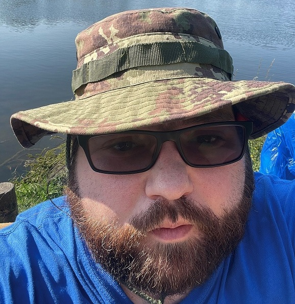

 CONTACT david.sekula@simcube.co.uk LinkedIn Profile GitHub Profile SKILLS .Net (C#) AI + ML Cognitive vision, linguistics and speech SQL + NoSQL Azure Aws Typescript Kubernetes Pulumi DevOps GitOps
EXPERIENCE CTO / Principle Software Engineer Sim Cube Ltd Technical / Solution Architect DevOps + GitOps Design, and implementation of Build Pipelines GitHub Actions, Azure DevOps, Azure AppCenter Octopus Deploy Pulumi IaC SonarQube static analysis CakeBuild (C#) Microservice Development .Net C# (dotnet 6) Kubernetes based Deployments Azure MassTransit Mobile Development Xamarin Forms Flutter Senior Software Engineer Cubic Ltd Technical / Solution Architect DevOps + GitOps Design, and implementation of Build Pipelines Jenkins Octopus Deploy Bitbucket Stash Terraform SonarQube static analysis Nuke C# + CakeBuild (C#) + Powershell Vagrant NIST OSWASP Microservice Development Containerisation solution architecture Kubernetes + Docker Swarm Migration of legacy code to .Net Core (dotnet 6) .Net Framework 4.6 - 4.8 NServiceBus RabbitMQ Azure SQL + ServiceBus Typescript Angular 6 + 11 NX Framework Hackathons Winner of Computer Vision ML Hackathon 2021 Runner Up Ai Regression 2019